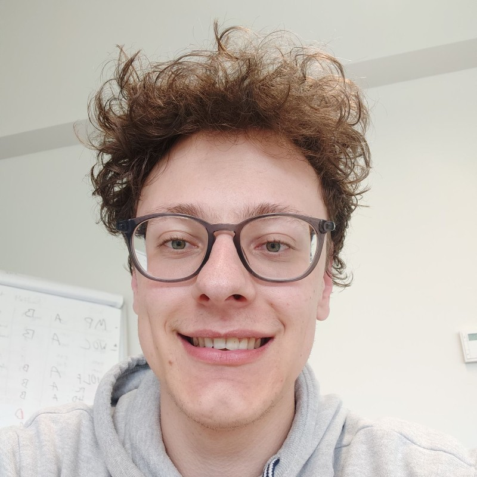

About Me

Hi! I'm Wiebe Cloet, a 23-year-old currently pursuing my second bachelor's degree in Computer Science. I completed my first degree in Multimedia and Creative Technologies at Howest in Kortrijk. My passion for technology, creativity, and problem-solving led me to further my education in this field.
When I'm not deep in code or exploring the latest tech trends, I enjoy longboarding, hitting the gym, and gaming. These hobbies keep me active, help me unwind, and fuel my creativity. I'm always looking for new challenges and ways to grow, both personally and professionally.